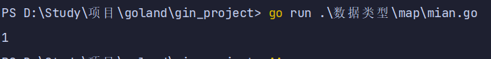

map
map 是一种无序的基于 key-value 的数据结构，Go 语言中的 map 是引用类型，必须初始化才能使用。
Go 语言中 map 的定义语法如下：
map[KeyType]ValueType其中:
- KeyType:表示键的类型。
- ValueType:表示键对应的值的类型。
- map 类型的变量默认初始值为 nil，需要使用 make()函数来分配内存。
其中 cap 表示 map 的容量，该参数虽然不是必须的。
注意：获取 map 的容量不能使用 cap, cap 返回的是数组切片分配的空间大小, 根本不能用于map。
要获取 map 的容量，可以用 len 函数。
1. 定义map
1.1. map定义：法1
package main
import "fmt"
func createMap() {
aMap := make(map[string]int, 8)
aMap["小明"] = 3
aMap["小李"] = 4
fmt.Println(aMap)
fmt.Println(aMap["小明"])
fmt.Printf("type: %T, value: %[1]v", aMap)
}
func main() {
createMap()
}
1.2. map定义：法2
package main
import "fmt"
func createMap2() {
aMap := map[string]int{
"张三": 1,
"李四": 2,
}
fmt.Println(aMap)
fmt.Println(aMap["张三"])
fmt.Printf("type: %T, value: %[1]v", aMap)
}
func main() {
createMap2()
}
1.3. map嵌套map
package main
import "fmt"
func createMultiMap() {
aMap := make([]map[string]string, 2)
for k, v := range aMap {
fmt.Printf("index:%d value:%v\n", k, v)
}
fmt.Println("----赋值后----")
aMap[0] = make(map[string]string, 3)
aMap[0]["name"] = "张三"
aMap[1] = make(map[string]string, 3)
aMap[1]["age"] = "李四"
for k, v := range aMap {
fmt.Printf("index:%d value:%v\n", k, v)
}
fmt.Printf("type: %T, len: %v,value: %[1]v", aMap, len(aMap))
}
func main() {
createMultiMap()
}
2. map基本使用
2.1. 判断某个键是否存在
package main
import "fmt"
func isMapKey() {
aMap := map[string]int{
"张三": 1,
"李四": 2,
}
name, isKey := aMap["张三"]
if isKey {
fmt.Println(name)
} else {
fmt.Println("key 不存在")
}
}
func main() {
isMapKey()
}

2.2. delete()函数
使用 delete()内建函数从 map 中删除一组键值对，delete()函数的格式如下：delete(map 对象, key)
其中，
- map 对象:表示要删除键值对的 map 对象
- key:表示要删除的键值对的键
package main
import "fmt"
func deleteMap() {
aMap := make(map[string]int, 2)
aMap["小明"] = 3
aMap["小李"] = 4
delete(aMap, "小明")
for k, v := range aMap {
fmt.Printf("key:%v value:%v\n", k, v)
}
}
func main() {
deleteMap()
}
3. map遍历
遍历key和value
package main
import "fmt"
func forMap() {
aMap := make(map[string]int, 2)
aMap["小明"] = 3
aMap["小李"] = 4
for k, v := range aMap {
fmt.Printf("key:%v value:%v\n", k, v)
}
}
func main() {
forMap()
}
3.1.
3.2. 只遍历Key
- 注意： 遍历 map 时的元素顺序与添加键值对的顺序无关
package main
import "fmt"
func forMapKey() {
aMap := make(map[string]int, 2)
aMap["小明"] = 3
aMap["小李"] = 4
for k := range aMap {
fmt.Printf("key:%v \n", k)
}
}
func main() {
forMapKey()
}
3.3. 顺序遍历map
package main
import (
"fmt"
"sort"
)
func forSortMapKey() {
aMap := make(map[string]int, 20)
for i := 0; i < 10; i++ {
key := fmt.Sprintf("key%d", i)
aMap[key] = i
}
fmt.Println(aMap)
var keys = make([]string, 0, 50)
for key := range aMap {
keys = append(keys, key)
}
fmt.Println(keys)
sort.Strings(keys)
fmt.Println(keys)
for _, key := range keys {
fmt.Println(key, ":", aMap[key])
}
}
func main() {
forSortMapKey()
}